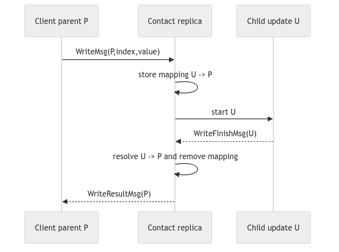
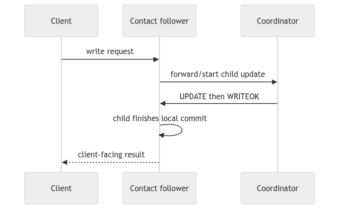
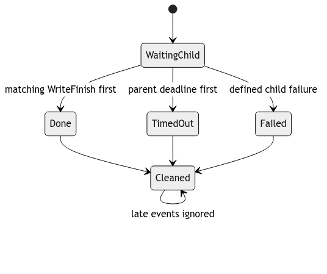
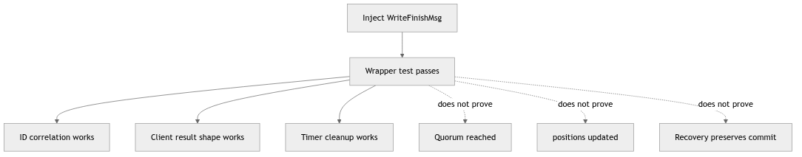
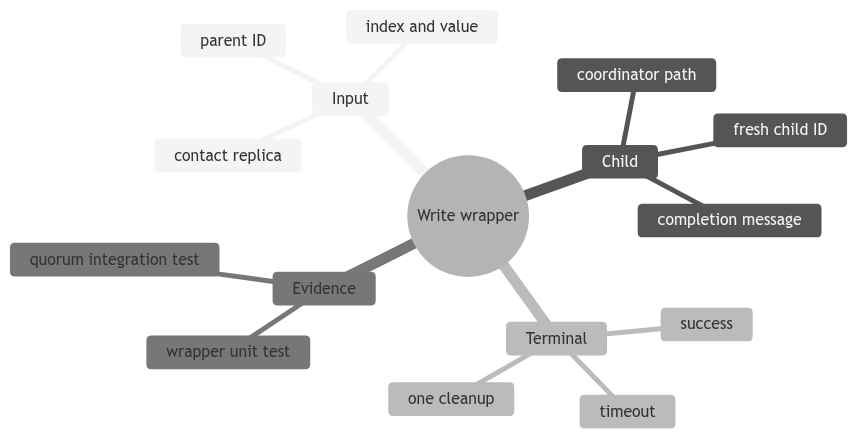

Learning goal. Separate the client-facing write conversation from the distributed UPDATE/ACK/WRITEOK algorithm and understand how parent and child transactions coordinate.
Wrapper implementation: origin/feat/WriteTransaction at 8c42a18.
Child-update integration reference: origin/feat/UpdateTransaction at 59bbe80.
Current election branch: contains the wrapper but leaves child update creation as TODO.
When a client says write(index, value), two different conversations begin:
Keeping them separate makes each FSM smaller. It also creates a correlation problem: the child update must eventually finish the correct parent write.
WriteTransaction defines:
WriteMsg: client request sent to the contacted replica.WriteFinishMsg: local notification that the replica-side parent may finish.WriteResultMsg: contacted replica’s reply to the client.WriteTimeoutMsg: client-local timeout.WriteTransactionMsg is a shared message base containing index and value.
The client public API objects WriteRequest, WriteResult, and WriteTimeout remain separate from wire messages.
The same class runs with two owner types.
INIT -> WAITING_RESULT -> DONE
-> TIMEOUT
It sends WriteMsg, schedules the client’s deadline, and produces the public callback.
INIT -> WAITING_UPDATE -> DONE
It starts the child UpdateTransaction. When it receives WriteFinishMsg, it returns WriteResultMsg to the original client.
Assume client C contacts follower R2 while R0 is coordinator.
WriteTransaction ID <C,0> and sends WriteMsg(<C,0>, index=4, value=99) to R2.WAITING_RESULT and schedules WriteTimeoutMsg(<C,0>).WriteTransaction, deliberately using parent ID <C,0> so later completion routes to it.<R2,0>, and starts UpdateTransaction with both IDs:
<R2,0> for update messages;<C,0> stored as writeTid.WriteFinishMsg(transactionId=<C,0>) to R2 itself.WriteTransaction.WriteResultMsg(<C,0>, index=4, value=99, replicaId=2) to C.<C,0>, cancels its timeout, invokes callbackOnWriteResult, and advances its queue.R2 hosts both parent and child at the same time. Replica.onMessage scans active transactions and stops at the first matching ID.
If both used <C,0>, an UpdateAckMsg or WriteFinishMsg could be delivered to whichever object appears first. Distinct IDs preserve local dispatch:
<C,0> -> parent WriteTransaction
<R2,0> -> child UpdateTransaction
writeTid is an explicit return address from child FSM to parent FSM.
If C contacts the coordinator directly, the replica-side parent still creates a child update ID owned by that replica. The child recognizes that its owner is coordinator and starts the coordinator role directly rather than sending an update request through the network to itself.
This avoids the Replica.unicast self-send guard. Algorithms must not assume self-unicast will deliver.
The client’s write timer covers the whole operation: contacted replica processing, coordinator forwarding, quorum exchange, completion return, and possibly recovery.
If the timer fires, C reports WriteTimeout. This does not undo update work. A partially completed update may be recovered later. The client API has no query transaction to resolve an uncertain timeout.
The timeout branch should cancel or otherwise invalidate any success path so only one callback appears. Late WriteResultMsg is discarded once the client advances to another ID.
WriteMsg: no child update exists; client times out.UPDATE: initiating replica’s child update timeout should trigger election/retry.The standalone write branch tests the wrapper by manually scheduling WriteFinishMsg at the replica. That proves request/result/timeout plumbing but does not prove a real update occurred.
The update branch wires child creation into replica-owned WriteTransaction, but it remains partial. The current election branch regressed to a TODO at that exact integration point because the update feature has not been merged there.
Therefore documentation must not say “WriteTransaction implements quorum broadcast.” It delegates quorum broadcast to another subsystem.
Existing wrapper tests cover:
Needed integrated cases include:
replicaId meaning the contacted replica, not necessarily coordinator.AbstractClient.WriteRequest: public request.Client.sendWrite: creates the client parent.Replica.onWriteMsg: creates the replica parent.WriteTransaction.start: chooses client or replica role.UpdateTransaction(..., writeTid): child link on update branch.WriteFinishMsg: child-to-parent local completion.WriteResultMsg: replica-to-client completion.TestWriteTransaction: wrapper-level tests.Why not use one transaction object from client through every replica? Objects are actor-local mutable FSMs. Messages cross actor boundaries; each actor owns its own transaction instance.
What does WriteFinishMsg prove? Only that the child says the replica-side write may finish. Correctness depends on sending it after valid local update completion.
The invariant to remember is: the client-facing parent completes only after its separately identified child update reports completion, and correlation returns through the original parent ID.
Client
|
+--> WriteTransaction (parent, client-owned)
|
+--> UpdateTransaction (child, replica/coordinator-owned)
|
quorum + WRITEOK
|
WriteFinishMsg (child -> parent)
WriteResultMsg (parent -> client)
The parent gives the client a stable lifecycle: one timeout and one final callback. The child speaks the replica protocol and may need many network messages. Keeping them separate prevents a network ACK from being mistaken for a client result.
At parent start, the code should create a fresh child ID and retain a mapping
from child to parent. The child must include enough metadata in
WriteFinishMsg for the parent to verify that it is the expected child. The
parent then sends WriteResultMsg using the original client-facing ID.
// Conceptual correlation table
parentId = (clientRef, 41)
childId = (coordinatorRef, 8)
children.put(childId, parentId)
onWriteFinish(msg):
if (!children.containsKey(msg.childId())) return; // stale/foreign
completeClient(children.remove(msg.childId()), msg.value())
Do not infer that two IDs are equal because they represent one logical write.
They live in different actor namespaces. This is the same identity lesson as
TransactionId versus EpochPair, now applied to a parent/child boundary.
There are at least three completion races: child success before parent timeout,
parent timeout before child success, and child failure while the timer is being
cancelled. A robust wrapper makes completion idempotent. After the parent has
entered DONE or TIMEOUT, a late WriteFinishMsg is ignored and cannot call
the application callback a second time.
The standalone write branch’s tests that inject WriteFinishMsg are useful,
but they do not prove that a real UpdateTransaction reached a quorum. Treat
them as wrapper tests and pair them with integration tests for the child.
Draw the three races above and label which actor owns each timer. Then explain why a client retry needs an idempotency key if the first child may have already committed after the parent timed out.
The wrapper translates a simple client operation into a distributed protocol. The parent cares about one terminal result and deadline; the child cares about coordinator routing, quorum, epochs, and WRITEOK. A wrapper test can validate translation even when the child is replaced by an injected completion message. It cannot prove the quorum protocol.
Identify the owner of every arrow. Objects remain local; only messages cross
actor boundaries. This prevents accidental assumptions that the client and
replica share one mutable WriteTransaction instance.

The mapping is protocol state. It should be installed before child work can complete, removed exactly once, and rejected if a foreign child ID arrives. Logging both IDs on every transition makes branch-level tests far easier to interpret.
If multiple parent writes can coexist at a replica, a single writeId field is
insufficient. The active transaction map or explicit correlation map must keep
each relationship separate.

The follower is not allowed to invent the global order. It forwards the update to the current coordinator and later participates like other replicas. The client result should not be sent merely because forwarding succeeded; it must wait for the child completion condition defined by the update protocol.
Coordinator changes complicate this path. A stored coordinator reference may be stale, so timeout and election integration must define whether the wrapper waits, retries, or reports uncertainty.

Every terminal path must remove parent-child correlation, invalidate timers, emit at most one callback, and release the client queue. Model these effects as one termination routine or prove equivalent guards in each handler.
Test a finish and timeout in both orders. Then inject a second finish. The expected result is not an exception; it is stable terminal state and one observable callback.

This evidence boundary should appear in every report that cites
TestWriteTransaction. A test double is valuable because it isolates the
parent. Integration tests must later run a real child across several replicas
and verify both callbacks and state.
When a test manually manufactures completion, inspect whether it could create an impossible sender or ID. A permissive wrapper might pass the test yet accept messages no real child should be able to send.

Write preconditions and postconditions for parent start, child completion, and parent timeout. Include the mapping state in each postcondition. Then draw a trace in which the client times out but the child commits later; explain why the callback remains timeout and why replicated recovery must still preserve the update.
A write begins as a client intention—set one array position to a value—but the contacted replica may not be the coordinator. The system therefore separates request orchestration from update agreement. The outer write FSM is responsible for reaching the right replica role and returning one client-facing outcome. The inner update FSM is responsible for assigning ordered identity, collecting a strict majority, and disseminating commit. Keeping those responsibilities separate makes each state machine smaller and exposes their failure boundary.
The cost of separation is correlation. The client parent has an ID meaningful to the client actor. A replica-created child has an ID meaningful in the replica’s active-transaction namespace. The contact replica must retain the relationship between them and translate child completion into a result that carries the parent ID. This is not bookkeeping incidental to the algorithm; it is the causal link that lets the API observe distributed completion.
When a follower receives a write request, it does not become coordinator for
that operation. It uses its current coordinator view to forward or initiate
the coordinator-side work. The coordinator remains the authority that assigns
the next EpochPair. If every contact replica allocated its own pair, two
concurrent clients could create incomparable or conflicting update orders.
The direct-coordinator case deserves its own trace. Sending through a network channel to self may create an unnecessary dependency or violate assumptions in the channel map. A coordinator can enter its local update path directly while preserving the same validation and callback semantics. Tests should cover both follower contact and coordinator contact because the routes differ even when the client-visible result is identical.
Quorum does not directly call the client. The coordinator update reaches its commit rule, participants materialize according to WRITEOK, the child reports completion to its owner, the wrapper converts that event into a parent result, and the client emits the required callback. At each boundary, ask what the completion means. “Quorum reached” means sufficient ACK evidence exists; “wrapper completed” means the contact replica received its defined child outcome; “client success” means the public API is allowed to report success.
Collapsing these meanings can produce premature callbacks. If success is sent when the request is merely forwarded, a later read may be scheduled before any commit. If the wrapper waits for every replica rather than the specified completion condition, one crashed follower can block liveness despite a surviving majority. The result boundary must match the protocol contract.
Suppose the client times out while the coordinator already has a quorum. The client knows only that no result arrived in time. The coordinator may know the update is committed. Some followers may know only that it was proposed. These different knowledge states are normal in a distributed execution. Recovery exists to reconcile replicas; the API timeout reports uncertainty to the caller.
The wrapper should not attempt to “undo” replicated work after its parent times out. Nor should a late child result emit a second callback or complete a new parent that happens to be current. Closing the parent mapping makes the late message locally harmless while history and recovery preserve whatever system-level obligation remains.
A focused wrapper test can replace the child with an injected finish message and verify ID translation, timeout cancellation, queue release, and callback shape. This is good unit evidence because it isolates the outer FSM. It does not show that a real coordinator collected distinct ACKs, applied positions, or survived a crash window.
An integration test should use several replicas, contact both a follower and the coordinator, verify the client callback, and inspect update-applied callbacks or subsequent reads across replicas. Then inject failure before and after quorum. The two test levels answer different questions and should not be substituted for each other in the report.
When a write never completes, list the expected chain as parent ID, contact replica, child ID, coordinator, update pair, ACK set, WRITEOK recipients, child finish, parent result, callback. Mark the last observed link. Then check the guard at the next boundary. This method narrows the fault without adding broad logging or assuming the most complicated subsystem is responsible.